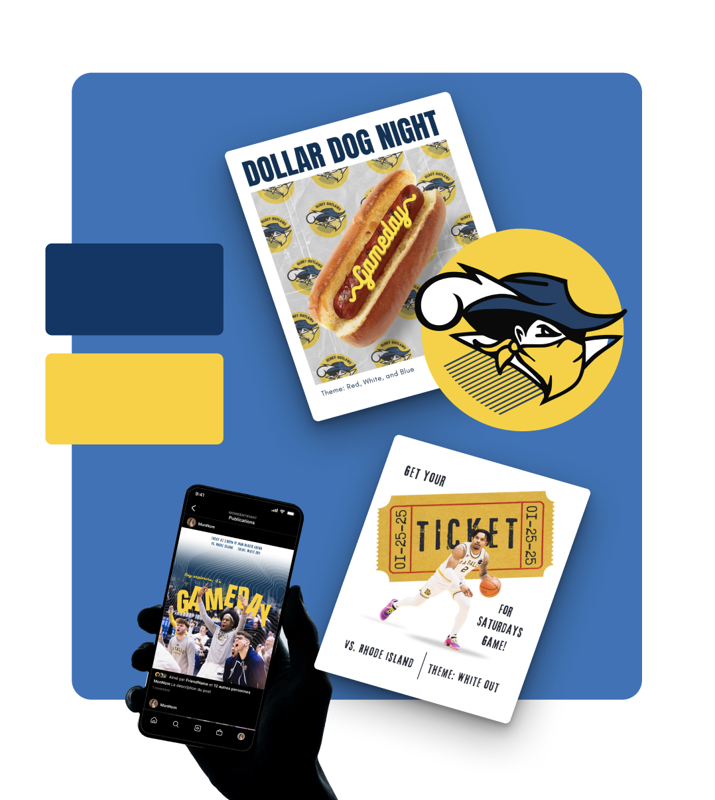
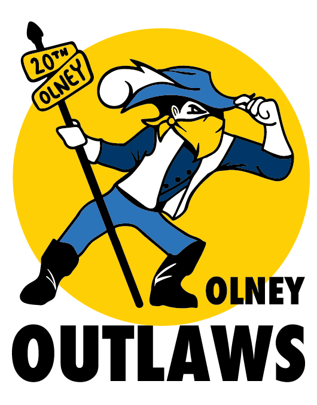
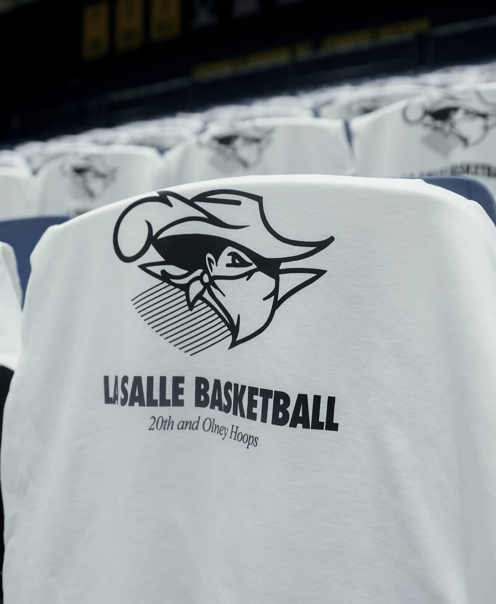
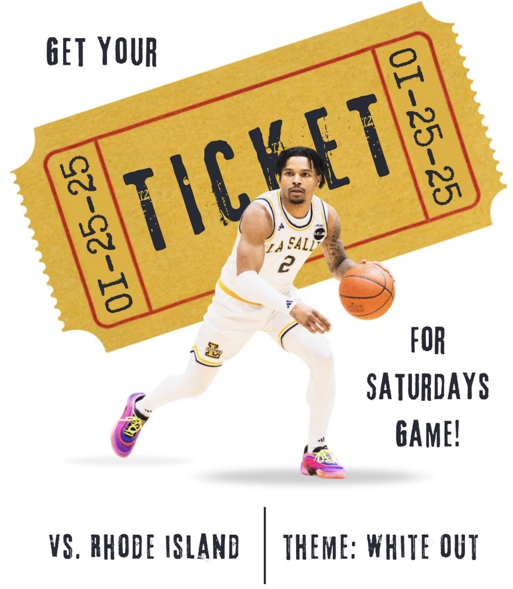
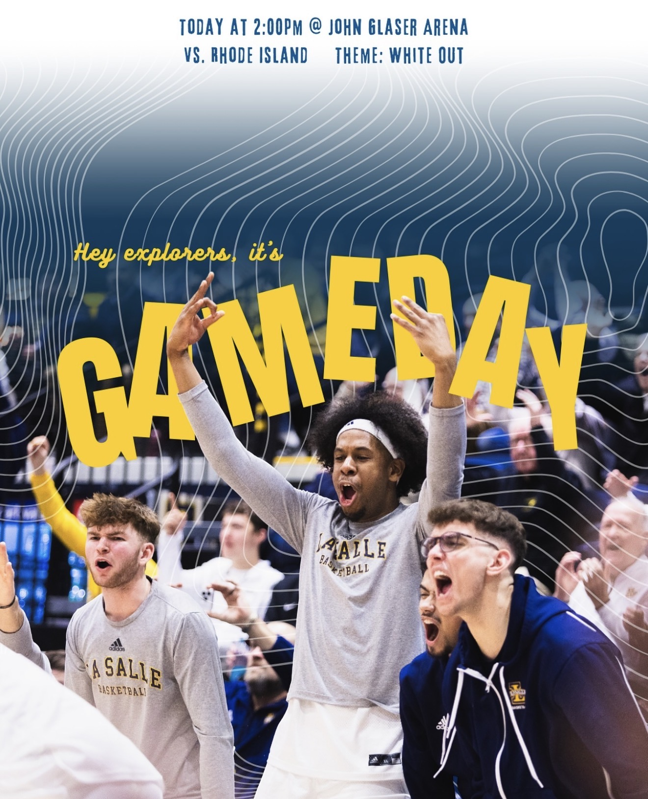
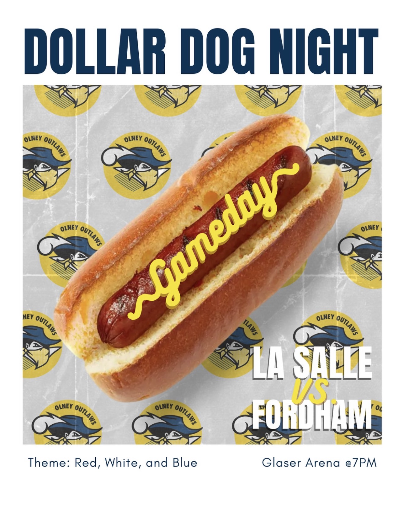
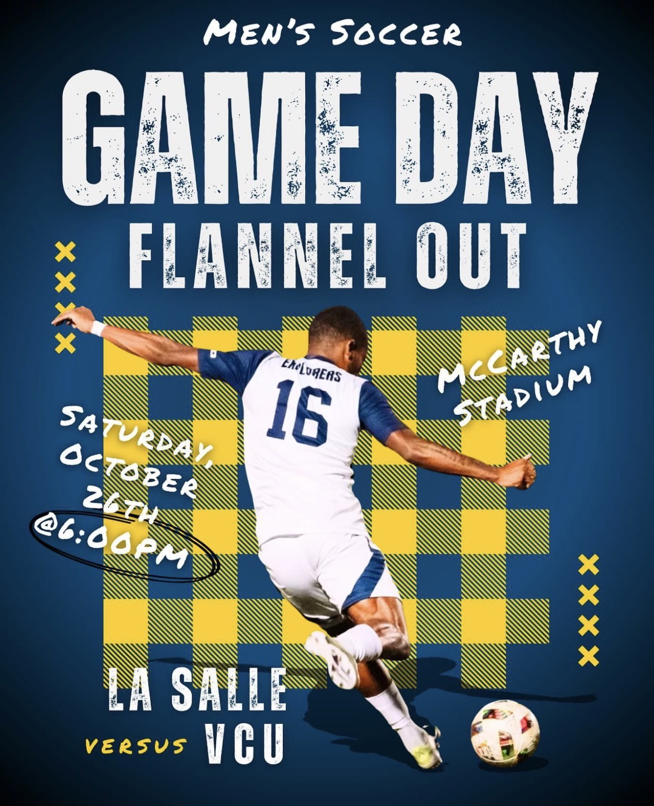
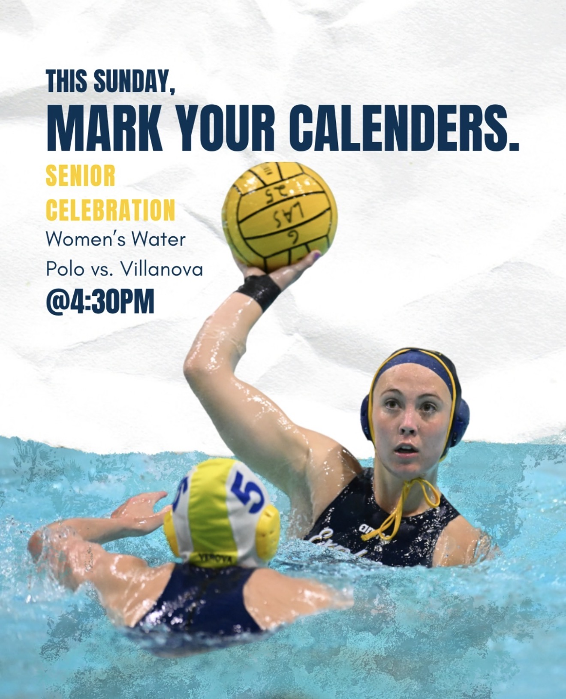

Olney Outlaws
The Olney Outlaws is LaSalle’s new student section organization, created by a teammate and I to bring energy, spirit, and a unified identity to Explorer gamedays. In creating the logo, I aimed to capture a free-spirited energy that embodies the Philly grit. Along with that, I aimed for a recognizable identity that feels both fierce and familiar withe LaSalle's mascot.
A teammate and I worked to create this organization after recognizing a divide between students athletes and others. Few people attended games and fellow teams did not support one another. We looked at surrounding schools such as Villanova or Temple and what we found, was that they had student section orgs. From there, the Olney Outlaws were born.


Constraints
One of the biggest challenges I faced when designing the logo is creating something different enough from the existing LaSalle Explorer, yet still recognizeable among students.
Solutions
I worked alongside the Athletic Department to gain feedback and understanding of what specific elements needed to change from the existing logo. For example, his attire must be different. Hence, I added the vest, Cowboy hat, and the bandana to cover his face.
Some other changes that needed to be made were either of his hands. In the legacy logo, one hand is holding a telescope while the other is holding a flag. In this logo, he holds his hat, to shield his face and almost hide his identity. In the other hand, he holds a street sign that marks the intersection of 20th and Olney, the heart of LaSalle.
Success
This project has proven to be one of my favorites, not for its design work but because of its impact.
The club had a slow start the first year. There was little improvement to game attendance. However in the second year, the numbers have multiplied and the club has recieved great positive feedback. So much that the Philly Inquirer wrote articles about the organization and we made headlines from bringing banners back to the Big 5.


Social Media
I created graphics to announce student-section themes and contests. My goal was to energize the explorer fan community and elevate the game-day experience. I focused on creating cohesive, eye-catching content that engaged students.
Constraints
One of the biggest challenges of being Social Media Chair for the Olney Outlaws was building engagement and awareness for a brand-new student organization.
Solutions
I focused on making content not only visually appealing but also compelling enough to encourage participation and establish a consistant voice. I found that using a variety of different sports and people in the graphics drove engagement.
Today, the instagram has grown to a little under 1,000 followers and the organization does a number of giveaways and challenges to drive student energy. It has been great to see how it has evolved into something so impactful!



